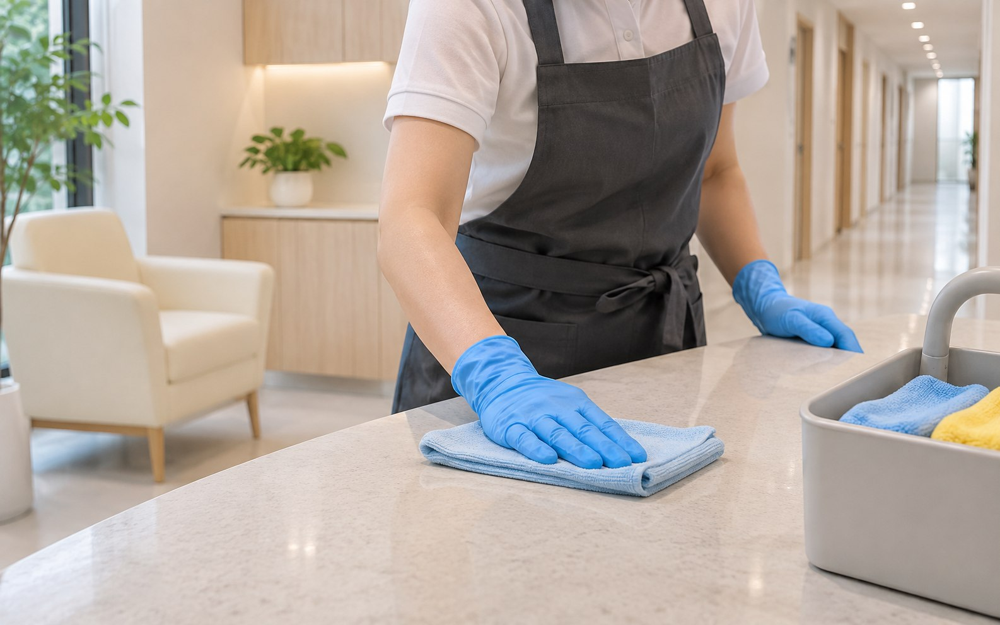

병원 정기청소 전문|원내케어
병원 정기청소 전문업체,
원내케어
병원 청소의 차이는 보이지 않는 곳에서 시작됩니다.
서울·경기 병원·의원의 공간별 청소 범위, 방문 주기와 작업시간을 상담하고 전담 인력과 현장 점검으로 관리합니다.
Operational Authority
숫자로 입증하는 신뢰도
Operational Footprint
109
개소
등록 거래처
등록 거래처 기준 병원 42곳 · 사무실 67곳. 현재 운영 현장 수와는 구분되는 거래처 목록입니다.
주요 권역
강남역 · 신사역 · 압구정 · 서초
Client Trust Index
12
개월+
평균 고객 유지기간
정기 품질 감사와 신속한 현장 피드백 체계로 장기 지속 파트너십을 형성합니다.
재계약 만족도
98.4% 갱신율
Human Reliability
4
년+
현장 매니저 평균 근속
일용직 파견이 아닌 정규 교육을 이수한 숙련된 전담 매니저 책임 배치제 원칙.
현장 청소관리 교육
월 1회 정기 이수
병원에 필요한 청소 범위
진료과에 맞는 일반공간 관리

지역별 병원청소 안내
병원 위치와 출입 여건, 희망 작업시간에 맞춰 관리 조건을 상담합니다.
원내케어의 관리 기준

거래처와 관리 포인트 확인
등록 거래처 자료와 공간별 관리 안내를 살펴보고, 업체교체에 필요한 조건을 비교해 보세요.
공간 이해를 위한 예시 이미지